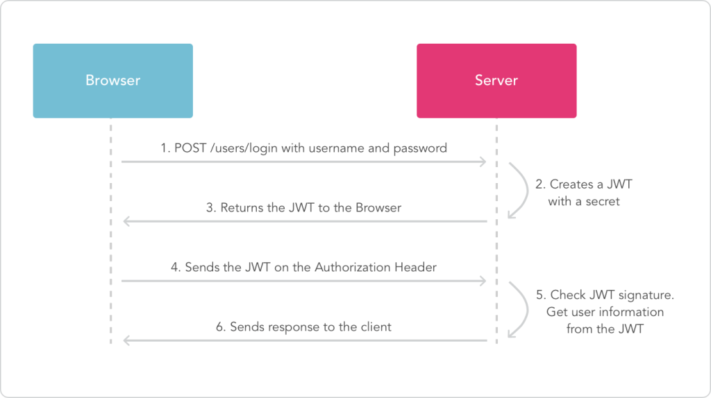

JWT (JSON Web Token)
Els mecanismes d'autenticació tradicional en aplicacions web estan basats en sessions: l'usuari envia les seues credencials a través d'algun formulari, el servidor ho valida i emmagatzema en la sessió les dades de l'usuari logueado, perquè, mentre no caduque la sessió o la tanque l'usuari, puga seguir accedint sense haver de tornar a autenticar-se.
No obstant açò, aquest tipus d'autenticació té la limitació de ser exclusiva per a aplicacions web, és a dir, per a clients web que es connecten a servidors web. Si volguérem adaptar l'aplicació a mòbil, o a una versió d'escriptori, no podríem seguir emprant aquest mecanisme.
Per a superar aquest escull, podem utilitzar l'autenticació basada en tokens. Aquesta és una autenticació "sense estat" (stateless), la qual cosa significa que no s'emmagatzema gens entre client i servidor per a seguir accedint autenticats. El que es fa és el següent:
- El client envia al servidor les seues credencials (usuari i password)
- El servidor les valguda, i si són correctes, genera una cadena xifrada anomenada token, que conté la validació de l'usuari, a més de certa informació addicional que puguem voler afegir (com el login de l'usuari, per exemple). Aquest token s'envia de tornada a l'usuari com a resposta a la seua autenticació.
- A partir d'aquest punt, cada vegada que el client vulga autenticar-se contra el servidor per a sol·licitar un recurs, n'hi ha prou que envie el token que el servidor li va proporcionar. El servidor s'encarregarà de verificar-ho per a comprovar que és correcte, i donar-li accés o denegar-li-ho.
Igual que les sessions, els tokens també poden tenir una caducitat, que s'indica dins del propi token. Si, passat aqueix temps, el servidor rep el token, ho descartarà com a invàlid (caducat), i el client tornarà a no estar autenticat.
JSON Web Token és un estàndard obert (RFC 7519) que defineix un mode compacte i autònom de transmetre de forma segura la informació entre dues parts com un objecte JSON. Aquesta informació pot ser verificada i és fiable perquè està signada digitalment.
Els JWT es poden signar usant un secret (amb l'algoritme HMAC) o utilitzant un parell de claus públiques/privades usant RSA i contenen la informació de l'usuari autenticat (el nom d'usuari, per exemple)
Estructura del token

Cicle de vida del token JWT

Implementació en Symfony
Per a poder treballar amb JWT en Symfony, podem emprar (entre uns
altres) el bundle lexik/LexikJWTAuthenticationBundle, que s'instal·la
d'aquesta manera:
composer require jwt-auth
composer require security
Entitat User
Caldrà disposar d'una entitat que implemente la interfície UserInterface que ja tenim del projecte anterior.
Endpoints
Usarem dos endpoints:
/api/loginserà la ruta on es troba el formulari./api/login_checkserà la ruta que valida les credencials.
Generació de certificats
Per a poder codificar els tokens, és necessari generar uns parell de certificats.
Generarem un de privat per a generar el token quan l'usuari es valide, i un públic per a poder-lo validar quan l'usuari ho envie.
Per a açò, executem aquestes ordre des del directori arrel del
projecte. Quan ens ho demane, triarem com passphrase la paraula movies
(és només una paraula o frase que utilitzar per a xifrar el contingut,
triem aqueixa per exemple):
mkdir config/jwt
openssl genrsa -out config/jwt/private.pem -aes256 4096
openssl rsa -pubout -in config/jwt/private.pem -out config/jwt/public.pem
Amb aquestes ordres hem creat (1) una clau privada basada en l'algorisme AES i (2) una pública a partir de la privada.
Configuració del fitxer .env
Ara hem d'editar també el fitxer .env o .env.local (millor aquest) i afegir aquestes línies:
JWT_PRIVATE_KEY_PATH=%kernel.project_dir%/config/jwt/private.pem
JWT_PUBLIC_KEY_PATH=%kernel.project_dir%/config/jwt/public.pem
JWT_PASSPHRASE=movies
JWT_TOKENTTL=3600
L'atribut JWT_PASSPHRASE haurà de coincidir amb el que hem indicat en
generar els certificats en el pas anterior (movies, en el nostre cas).
L'atribut JWT_TOKENTTL és el temps de vida o caducitat del token, en segons.
En aquest cas, li donem un temps de validesa d'una hora.
Configuració de config/packages/lexik_authentication.yaml
Aquest fitxer quedarà d'aquesta manera, en el qual indiquem on estan generades la clau privada i pública, la paraula de xifrat i el temps de vida:
lexik_jwt_authentication:
secret_key: '%env(resolve:JWT_SECRET_KEY)%' # required for token creation
public_key: '%env(resolve:JWT_PUBLIC_KEY)%' # required for token verification
pass_phrase: '%env(JWT_PASSPHRASE)%' # required for token creation
token_ttl: %env(JWT_TOKENTTL)% # in seconds, default is 3600
Configuració de config/packages/security.yaml
L'arxiu principal de seguretat config/packages/security.yaml haurà de
contenir aquests atributs per a l'autenticació per token:
# Symfony 5.3 and higher
security:
enable_authenticator_manager: true
# ...
# user provider, password hasher and so on...
#
# ...
firewalls:
login:
pattern: ^/api/login
stateless: true
json_login:
check_path: /api/login_check
success_handler: lexik_jwt_authentication.handler.authentication_success
failure_handler: lexik_jwt_authentication.handler.authentication_failure
api:
pattern: ^/api
stateless: true
jwt: ~
access_control:
- { path: ^/api/login, roles: PUBLIC_ACCESS }
- { path: ^/api, roles: IS_AUTHENTICATED_FULLY }
Caldrà afegir també la següent ruta en config/routes.yaml:
api_login_check:
path: /api/login_check
El que hem definit en aquest fitxer és:
- El firewall
loginque s'activarà en accedir a la rutaapi/login. Ruta que serà pública, com s'observa enaccess_control. json_loginindica que s'espera una sol·licitud via JSON.- El firewall
apis'activarà en la resta de rutes de la API, on s'indicarà que cap aplicar l'autenticació jwt. jwt: ~activa l'autenticador JWT.
Provant l'autenticació
Per a provar que l'autenticació funciona, crearem una nova petició
POST en Postman a la URI /api/login_check, i li passem en el cos de
la petició l'usuari (username) i la contrasenya (password). En aquest
exemple, suposem que l'usuari és user i la contrasenya (sense
encriptar) és user. Haurem d'afegir també una capçalera (Header) amb
l'atribut ContentType establit a application/json.
Si tot va correctament, rebrem com a resposta un token:
Si analitzem el token obtindrem:

La signatura és invàlida ja que no s'ha pogut verificar amb les claus pública i privada.
Provant l'autorització
Ara, provarem a obtenir un llistat de pel·lícules. Si llancem la petició en Postman sense cap tipus d'autorització, rebrem aquest missatge de tornada:
{
"code": 401,
"message": "JWT Token not found"
}
Hem d'afegir una capçalera Authorization el valor de la qual siga el
prefix "Bearer " (incloent l'espai final) seguit del token que ens ha
enviat el servidor en autenticar-nos:

D'aquesta forma sí que obtindrem el llistat de pel·lícules. Haurem de procedir de la mateixa forma (enviant el token en la capçalera Authorization) per a
poder emprar la resta de peticions.